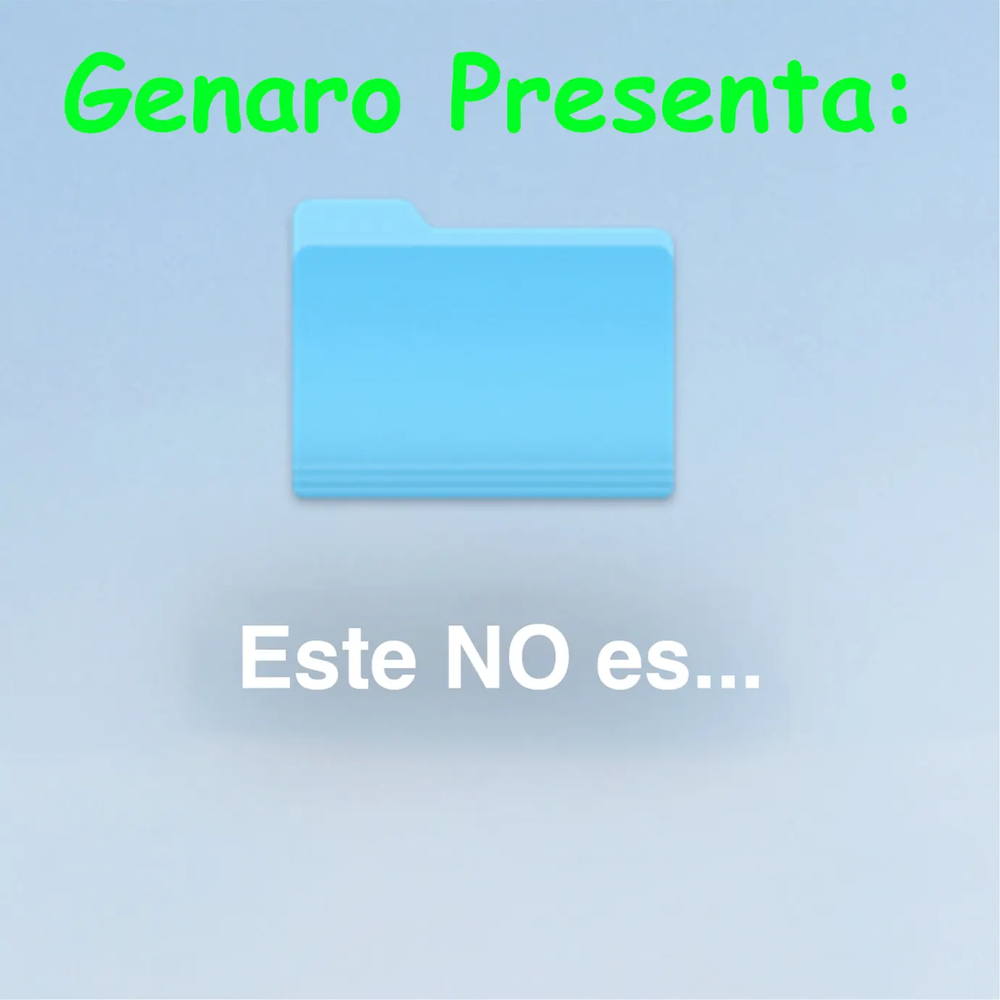

Perder para Ganar
2023
Refleja crecimiento personal con letras sobre aprender de las pérdidas. Me
gusta porque mantiene su esencia
relajada, pero con un mensaje inspirador y positivo.
- Colibrí
- Volvernos a Topar
- Ninguna me pasa
Fogateras
2022
Me gusta porque tiene un sonido acústico relajado que resalta la esencia de
Sabino. Es un álbum íntimo y
nostálgico, ideal para escuchar con calma.
- Y más
- Agua Mineral
- Dime Tú

Genaro Presenta: Este NO es el Disco
2021
Es un álbum ligero y divertido con letras cotidianas y sarcásticas. Me gusta
porque combina humor con ritmos
pegajosos, ideal para disfrutar sin pensar demasiado.
- Única Testigo (ft. Dan Solo)
- Roma (ft. Lrdp Maqueta)
- Te ves bien (ft. Ferraz)
Yang
2021
Complementa a Yin con un sonido más optimista. Me gusta porque mantiene la
esencia de Sabino, pero con un
equilibrio entre introspección y diversión.
- Diamante
- Ajenos
- ¿Qué pasó mi amor?
Yin
2019
Este disco muestra el lado más sentimental y melancólico de Sabino. Me
gusta porque sus letras de desamor
tienen un toque irónico y emocional, con melodías suaves.
- Tú
- Película
- Conmigo Siempre